Справочник по Angular и React · модуль 3 · несколько экранов, публикация, расписание
3.1
Маршрутизация
В этой главе у доски заявок появляются отдельные страницы со своими адресами: список заявок по адресу /, статистика по адресу /stats и страница одной заявки по адресу вида /requests/sb54xjym6egnk8y. Страницы выбирает библиотека react-router по адресу в строке браузера. Переходы между страницами выполняются без перезагрузки: опыт с обычной ссылкой показывает, чем она отличается от ссылки react-router. В конце главы разобрано, как данные из App доходят до каждой страницы.
- Категория
- React, маршрутизация
- Уровень
- Начальный
- Что понадобится
- Проект
zayavkiпосле модуля 2 и запущенный PocketBase с коллекциейrequests - Результат
- Папка
src/pagesс четырьмя страницами, меню в шапке, у каждой заявки — своя страница и свой адрес
§1Адрес и экран
ДелаемОпыт: открываем адрес /stats
- Откройте другой адрес
Проверьте, что в терминале VS Code работает
npm run dev, а в Docker Desktop запущен контейнерavtomatizaciya-pocketbase-1. В адресной строке браузера наберитеlocalhost:5173/statsи нажмите Enter. Открылась та же доска заявок, что по адресуlocalhost:5173.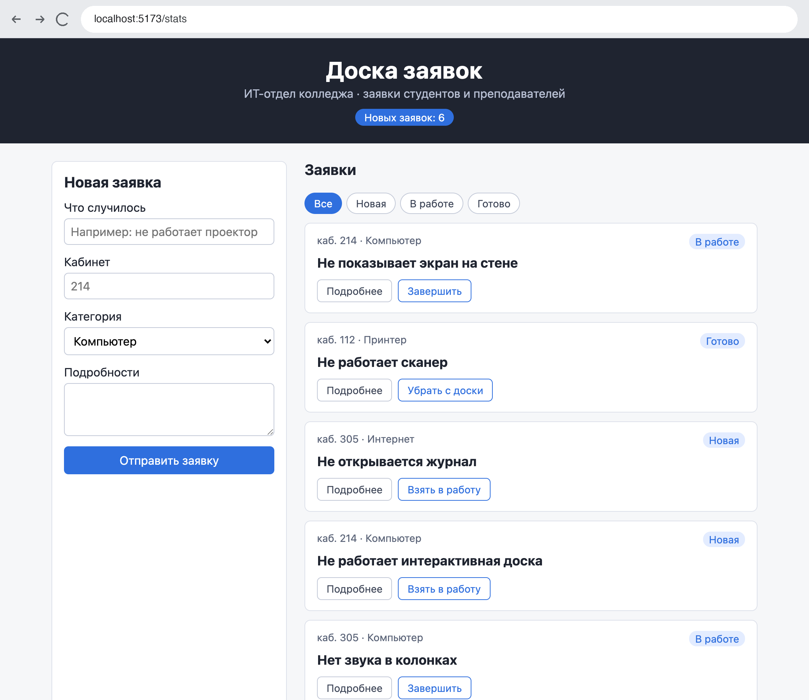
Адрес /stats: на экране та же доска
РазбираемсяПочему адрес ни на что не влияет
Адрес в браузере состоит из двух частей. localhost:5173 — сервер, к которому обращается браузер. /stats — путь (path): какую страницу этого сервера нужно показать. На обычном сайте каждому пути соответствует свой файл или свой ответ сервера.
Сервер Vite на любой путь отдаёт один и тот же файл index.html. В нём подключён main.tsx, который отрисовывает App. В коде App путь нигде не читается, поэтому по адресам /, /stats и /abc на экране одна и та же доска. Такое приложение называют одностраничным (single-page application, SPA): HTML-страница одна, а всё, что видно на экране, рисует JavaScript.
В бизнес-центре один вход и одна стойка охраны. Посетитель называет номер офиса, и охранник по списку говорит, на какой этаж идти. Здание одно, а по номеру посетитель попадает в разные помещения.
Пока у стойки нет списка, охранник всех отправляет в один и тот же офис. Так сейчас устроена доска: путь есть, а списка «путь → экран» нет.
Такой список называется списком маршрутов. Маршрут (route) — правило «путь → компонент»: по пути /stats показать компонент статистики. Маршрутизация (routing) — выбор компонента по пути из адресной строки. В React её выполняет отдельная библиотека. В этой главе используется библиотека react-router.
Как путь из адреса превращается в экран
Сервер Vite в выборе не участвует: он отдаёт index.html на любой путь. Путь читает BrowserRouter в браузере, а Routes находит в списке подходящий маршрут и отрисовывает его компонент.
Страницы приложения будут такими:
| Путь | Страница | Компонент |
|---|---|---|
/ | форма и список заявок с фильтром — доска, как сейчас | BoardPage |
/stats | число заявок по статусам и категориям | StatsPage |
/requests/… | одна заявка: описание, номер, кнопка действия | RequestPage |
| любой другой | сообщение «Страница не найдена» | NotFoundPage |
Первый шаг — установить react-router и описать два маршрута: / и /stats.
§2Маршруты: Routes и Route
ДелаемСтавим библиотеку и выносим доску в страницу
- Установите react-router
Откройте второй терминал (Terminal → New Terminal): в первом работает
npm run dev. Выполните две команды.Терминал · папка react-kurs cd zayavki npm install react-router@8.5.1
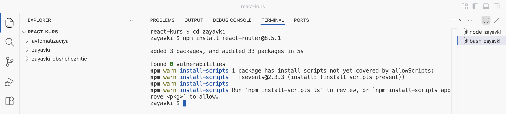
react-router установлен: добавлено 3 пакета Строки
npm warn install-scriptsотносятся к пакетуfsevents, который используется сервером Vite на macOS. На установку react-router они не влияют. На Windows этих строк нет. - Подключите BrowserRouter
Замените содержимое
src/main.tsx. Добавлен импорт и тег<BrowserRouter>вокруг<App />.zayavki/src/main.tsx import { StrictMode } from 'react' import { createRoot } from 'react-dom/client' import { BrowserRouter } from 'react-router' import './index.css' import App from './App.tsx' createRoot(document.getElementById('root')!).render( <StrictMode> <BrowserRouter> <App /> </BrowserRouter> </StrictMode>, )
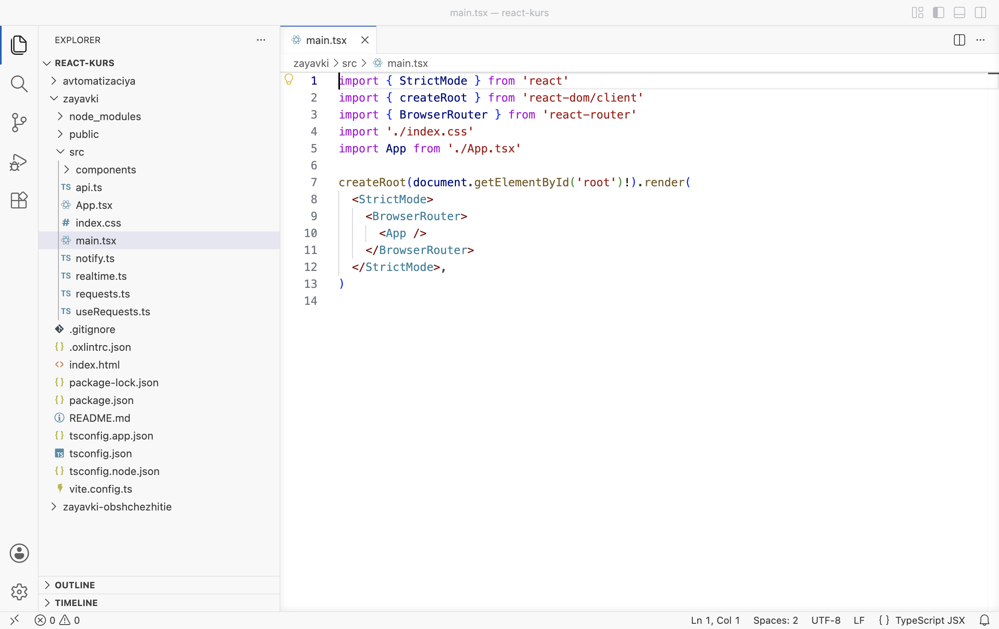
main.tsx: App внутри BrowserRouter - Создайте страницу доски
В папке
srcсоздайте папкуpages, в ней — файлBoardPage.tsx. Вставьте код. В него изApp.tsxперенесены фильтр, обработка клавиши Esc и разметка формы и списка.zayavki/src/pages/BoardPage.tsx import { useEffect, useState } from 'react' import RequestForm from '../components/RequestForm' import RequestCard from '../components/RequestCard' import type { NewRequest, RequestItem, Status } from '../requests' type Filter = 'Все' | Status const FILTERS: Filter[] = ['Все', 'Новая', 'В работе', 'Готово'] type BoardPageProps = { requests: RequestItem[] loading: boolean error: string onRetry: () => void onAdd: (data: NewRequest) => void onNext: (id: string, status: Status) => void onRemove: (id: string) => void } function BoardPage({ requests, loading, error, onRetry, onAdd, onNext, onRemove }: BoardPageProps) { const [filter, setFilter] = useState<Filter>('Все') const visible = filter === 'Все' ? requests : requests.filter((r) => r.status === filter) useEffect(() => { function handleKey(event: KeyboardEvent) { if (event.key === 'Escape') { setFilter('Все') } } window.addEventListener('keydown', handleKey) return () => window.removeEventListener('keydown', handleKey) }, []) return ( <main className="board"> <RequestForm onAdd={onAdd} /> <section className="list"> <h2>Заявки</h2> <div className="filters"> {FILTERS.map((f) => ( <button key={f} className={f === filter ? 'active' : ''} onClick={() => setFilter(f)}> {f} </button> ))} </div> {loading && <p className="empty">Загрузка заявок…</p>} {error !== '' && ( <div className="load-error"> <p>{error}</p> <button onClick={onRetry}>Повторить</button> </div> )} {!loading && error === '' && visible.length === 0 && <p className="empty">Заявок с таким статусом нет</p>} {visible.map((r) => ( <RequestCard key={r.id} title={r.title} room={r.room} category={r.category} details={r.details} status={r.status} onNext={() => onNext(r.id, r.status)} onRemove={() => onRemove(r.id)} /> ))} </section> </main> ) } export default BoardPage
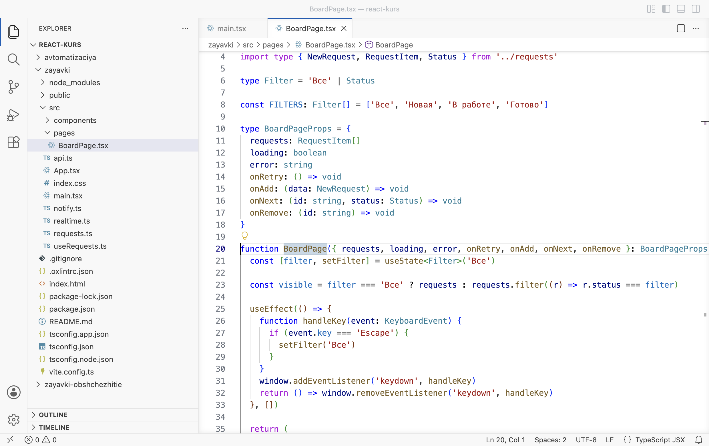
Новая папка pages и файл BoardPage.tsx - Создайте страницу статистики
В папке
src/pagesсоздайте файлStatsPage.tsx.zayavki/src/pages/StatsPage.tsx import type { Category, RequestItem, Status } from '../requests' const STATUSES: Status[] = ['Новая', 'В работе', 'Готово'] const CATEGORIES: Category[] = ['Компьютер', 'Проектор', 'Принтер', 'Интернет'] type StatsPageProps = { requests: RequestItem[] loading: boolean } function StatsPage({ requests, loading }: StatsPageProps) { if (loading) { return ( <main className="page"> <p className="empty">Загрузка заявок…</p> </main> ) } return ( <main className="page"> <h2>Статистика</h2> <p>Всего заявок: {requests.length}</p> <div className="stats"> <table> <thead> <tr><th>Статус</th><th>Заявок</th></tr> </thead> <tbody> {STATUSES.map((s) => ( <tr key={s}> <td>{s}</td> <td>{requests.filter((r) => r.status === s).length}</td> </tr> ))} </tbody> </table> <table> <thead> <tr><th>Категория</th><th>Заявок</th></tr> </thead> <tbody> {CATEGORIES.map((c) => ( <tr key={c}> <td>{c}</td> <td>{requests.filter((r) => r.category === c).length}</td> </tr> ))} </tbody> </table> </div> </main> ) } export default StatsPage
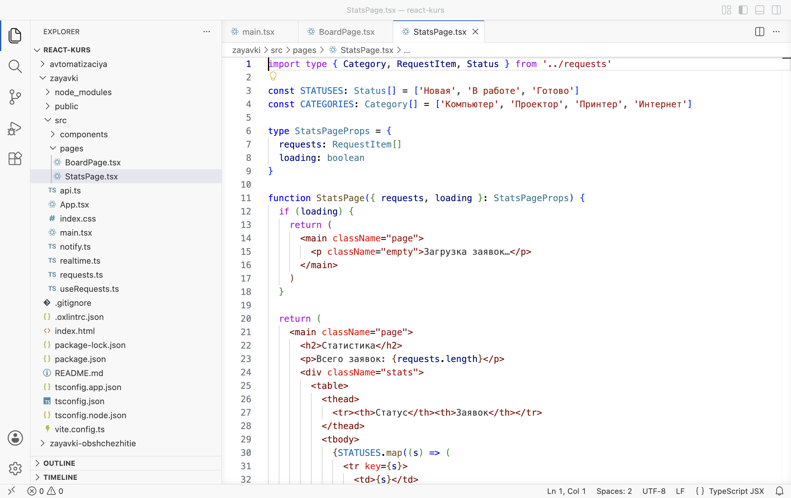
StatsPage.tsx - Добавьте стили страниц
Откройте
src/index.cssи вставьте в конец файла правила ниже. В них оформление меню, страниц, таблиц статистики и страницы заявки — для всех шагов этой главы.zayavki/src/index.css · в конец файла .nav { display: flex; justify-content: center; gap: 8px; margin-top: 16px; } .nav a { padding: 6px 14px; border-radius: 16px; color: #b8c0d4; text-decoration: none; } .nav a.active { background: #ffffff; color: #1f2430; } .notice--page { box-sizing: border-box; max-width: 960px; margin: 16px auto 0; } .page { max-width: 960px; margin: 0 auto; padding: 24px 20px; } .page h2 { margin: 0 0 12px; } .stats { display: grid; grid-template-columns: 1fr 1fr; gap: 24px; margin-top: 16px; } .stats table { border-collapse: collapse; background: #ffffff; border: 1px solid #dde1ea; } .stats th, .stats td { padding: 8px 12px; border-bottom: 1px solid #dde1ea; text-align: left; } .stats td:last-child { text-align: right; } .card h3 a { color: inherit; text-decoration: none; } .card h3 a:hover { color: #2f6fde; text-decoration: underline; } .back { display: inline-block; margin-bottom: 16px; color: #2f6fde; text-decoration: none; } .request h2 { margin: 8px 0; font-size: 24px; } .request .request__id { margin-top: 12px; color: #8a93a6; font-size: 14px; }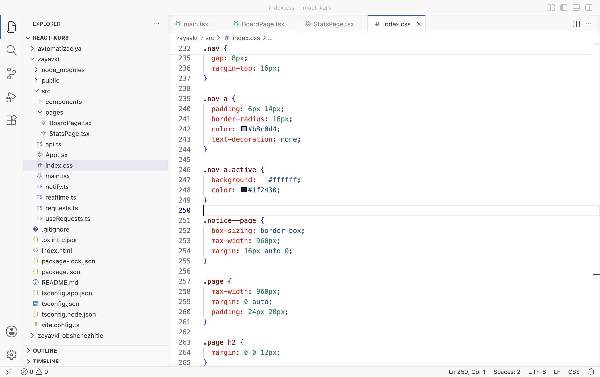
Новые правила в конце index.css - Замените App.tsx
Замените содержимое
src/App.tsx. Фильтр, Esc и разметка доски из него ушли вBoardPage. Вместо разметки — список маршрутов в строках 63–79. Сообщениеnoticeтеперь выводится под шапкой, строка 62. Изменённые строки подсвечены.zayavki/src/App.tsx import { useEffect, useState } from 'react' import { Route, Routes } from 'react-router' import Header from './components/Header' import BoardPage from './pages/BoardPage' import StatsPage from './pages/StatsPage' import type { NewRequest, Status } from './requests' import { useRequests } from './useRequests' import { sendRequest } from './notify' function App() { const { requests, loading, error, retry, add, next, remove } = useRequests() const [notice, setNotice] = useState('') const newCount = requests.filter((r) => r.status === 'Новая').length useEffect(() => { document.title = `Новых: ${newCount} · Доска заявок` }, [newCount]) useEffect(() => { if (notice === '') { return } const timer = setTimeout(() => setNotice(''), 5000) return () => clearTimeout(timer) }, [notice]) async function handleNext(id: string, status: Status) { try { await next(id, status) } catch (e) { setNotice((e as Error).message) } } async function handleAdd(data: NewRequest) { try { const created = await add(data) setNotice('Заявка добавлена. Отправляем уведомление…') const sent = await sendRequest(created) if (sent) { setNotice('Заявка добавлена, уведомление отправлено.') } else { setNotice('Заявка добавлена, но уведомление не отправлено: сервер автоматизации недоступен.') } } catch (e) { setNotice((e as Error).message) } } async function handleRemove(id: string) { try { await remove(id) } catch (e) { setNotice((e as Error).message) } } return ( <> <Header newCount={newCount} /> {notice !== '' && <p className="notice notice--page">{notice}</p>} <Routes> <Route path="/" element={ <BoardPage requests={requests} loading={loading} error={error} onRetry={retry} onAdd={handleAdd} onNext={handleNext} onRemove={handleRemove} /> } /> <Route path="/stats" element={<StatsPage requests={requests} loading={loading} />} /> </Routes> </> ) } export default App
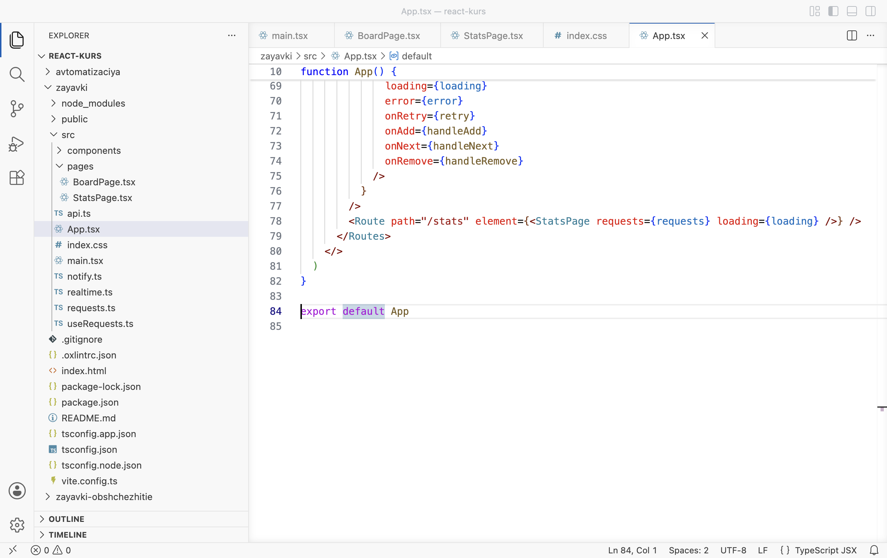
Список маршрутов в App.tsx - Проверьте путь /
Откройте
localhost:5173и обновите страницу (F5). Доска выглядит как раньше.По пути / — доска - Проверьте путь /stats
Наберите в адресной строке
localhost:5173/stats. Открылась страница статистики: всего 11 заявок, две таблицы.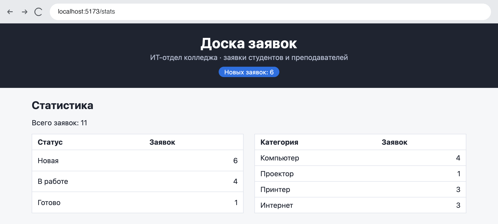
По пути /stats — статистика - Проверьте несуществующий путь
Откройте DevTools (F12) на вкладке Console и наберите адрес
localhost:5173/abc. Под шапкой пусто, в консоли предупрежденияNo routes matched location "/abc"— «ни один маршрут не подошёл к адресу /abc».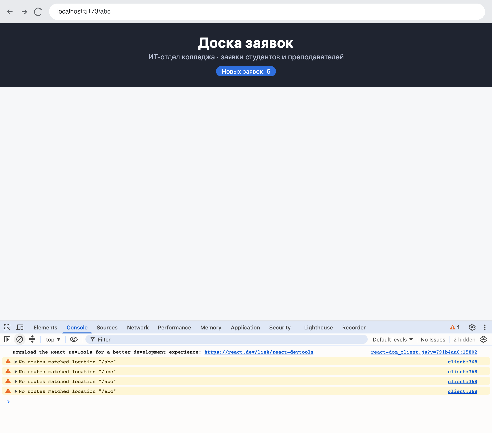
Путь /abc: маршрута нет, страница пустая - Создайте страницу «Не найдено»
В папке
src/pagesсоздайте файлNotFoundPage.tsx.zayavki/src/pages/NotFoundPage.tsx import { useLocation } from 'react-router' function NotFoundPage() { const { pathname } = useLocation() return ( <main className="page"> <h2>Страница не найдена</h2> <p>Адреса {pathname} в приложении нет.</p> </main> ) } export default NotFoundPage
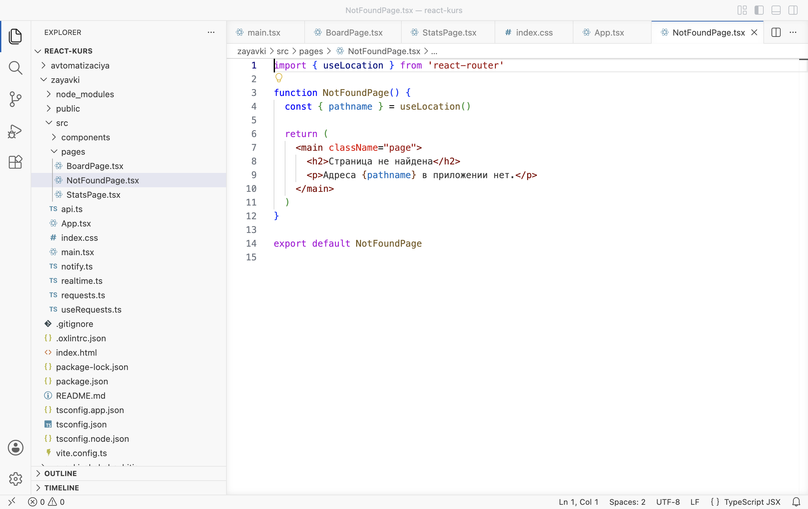
NotFoundPage.tsx - Добавьте маршрут «*»
В
src/App.tsxпосле строки 5 добавьте импорт страницы:App.tsx · строка 6 import NotFoundPage from './pages/NotFoundPage'
После строки с маршрутом
/stats(теперь это строка 79) добавьте маршрут для всех остальных путей:App.tsx · строка 80 <Route path="*" element={<NotFoundPage />} />
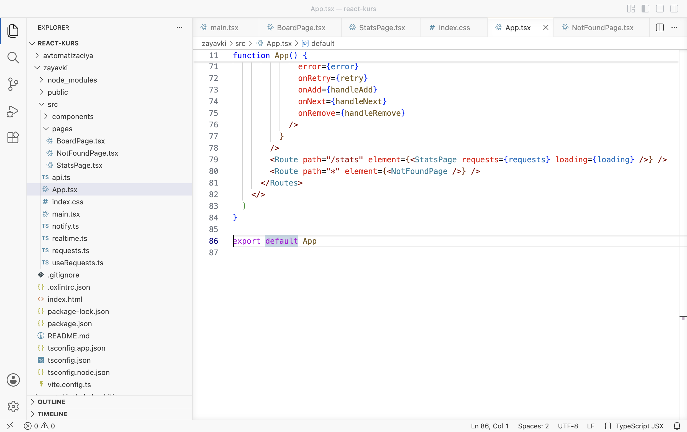
Маршрут «*» — последний в списке - Проверьте путь /abc ещё раз
Обновите страницу
localhost:5173/abc(F5). Под шапкой сообщение «Страница не найдена» с путём из адреса.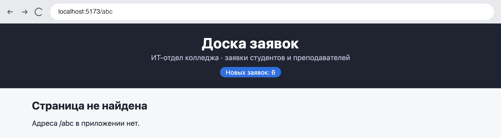
Путь /abc: страница «Не найдено»
РазбираемсяТри части маршрутизации
В react-router маршрутизацию собирают из трёх компонентов, и стоят они на разных уровнях приложения. Два из них — в App.
<Routes> 1 <Route path="/" 2 element={ 3 <BoardPage requests={requests} loading={loading} error={error} onRetry={retry} onAdd={handleAdd} onNext={handleNext} onRemove={handleRemove} /> } /> <Route path="/stats" element={<StatsPage requests={requests} loading={loading} />} /> 4 </Routes>
- 1
<Routes>— место на экране, где появляется страница. Он берёт путь из адреса, по очереди сравнивает его с путями вложенных<Route>и отрисовывает компонент первого подходящего маршрута. Всё, что стоит вне<Routes>, видно на всех страницах: так шапкаHeaderв строке 61 остаётся сверху и на доске, и на статистике. - 2
path="/"— путь, при котором маршрут подходит. Путь/совпадает только с корнем сайта, путь/stats— только с/stats. - 3
element— что отрисовать: готовый тег компонента вместе с props. Значение записано в фигурных скобках, потому что это выражение JSX.BoardPageполучает отAppсписок, состояние загрузки и обработчики — так же, как раньше их получалиRequestFormиRequestCard. - 4
Короткий маршрут в одну строку. Статистике нужны только список и признак загрузки.
<BrowserRouter> в main.tsx — третья часть. Он читает путь из адресной строки, следит за его изменениями и сообщает путь вложенным компонентам. Поэтому <BrowserRouter> оборачивает всё приложение: <Routes>, ссылки и хуки react-router работают только внутри него.
Маршрут path="*" подходит к любому пути. <Routes> выбирает маршрут с самым точным совпадением, поэтому * срабатывает, только когда другие маршруты не подошли. Без него на пути /abc не подходит ничего, <Routes> ничего не отрисовывает, и под шапкой пусто.
Компонент NotFoundPage узнаёт путь хуком useLocation. Хук возвращает объект с текущим адресом, а поле pathname — путь без сервера: /abc. Хуки react-router подчиняются тем же правилам, что useState: вызываются на верхнем уровне компонента, до любого return.
<Routes> <Route path="/" element={ <BoardPage requests={requests} loading={loading} error={error} onRetry={retry} onAdd={handleAdd} onNext={handleNext} onRemove={handleRemove} /> } /> <Route path="/stats" element={<StatsPage requests={requests} loading={loading} />} /> <Route path="*" element={<NotFoundPage />} /> </Routes>
- Путь из адреса
BrowserRouterпрочитал адресlocalhost:5173/abcи передалRoutesпуть.pathname/abc - Маршрут /
Путь
/совпадает только с корнем./abc— не корень, маршрут не подходит. - Маршрут /stats
/abcи/stats— разные пути. Не подходит. - Маршрут *
Звёздочка подходит к любому пути. Других совпадений нет, поэтому выбран этот маршрут.
выбранNotFoundPage - Отрисовка
Routesотрисовывает элемент маршрута:<NotFoundPage />. Внутри негоuseLocationвозвращает тот же путь/abc, и он попадает в текст сообщения.
Страницы открываются, но пока только набором адреса вручную. Нужно меню со ссылками.
§3Переходы: Link и NavLink
ДелаемОпыт: меню на обычных ссылках
- Добавьте меню в шапку
Замените содержимое
src/components/Header.tsx. Под счётчиком — меню<nav>из двух обычных ссылок HTML.zayavki/src/components/Header.tsx · опыт type HeaderProps = { newCount: number } function Header({ newCount }: HeaderProps) { return ( <header className="header"> <h1>Доска заявок</h1> <p>ИТ-отдел колледжа · заявки студентов и преподавателей</p> <span className="header__count">Новых заявок: {newCount}</span> <nav className="nav"> <a href="/">Заявки</a> <a href="/stats">Статистика</a> </nav> </header> ) } export default Header
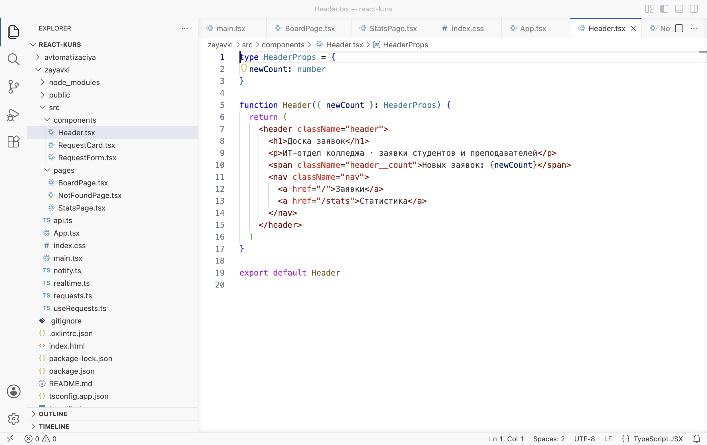
Меню из двух тегов <a> - Перейдите на статистику
Откройте
localhost:5173. В DevTools перейдите на вкладку Network и выберите фильтр All. Нажмите кнопку очистки списка ⊘ (Clear network log), затем в меню на странице — Статистика. Внизу панели —31 requests: браузер заново загрузил страницу, модули приложения, список заявок и подписку на события.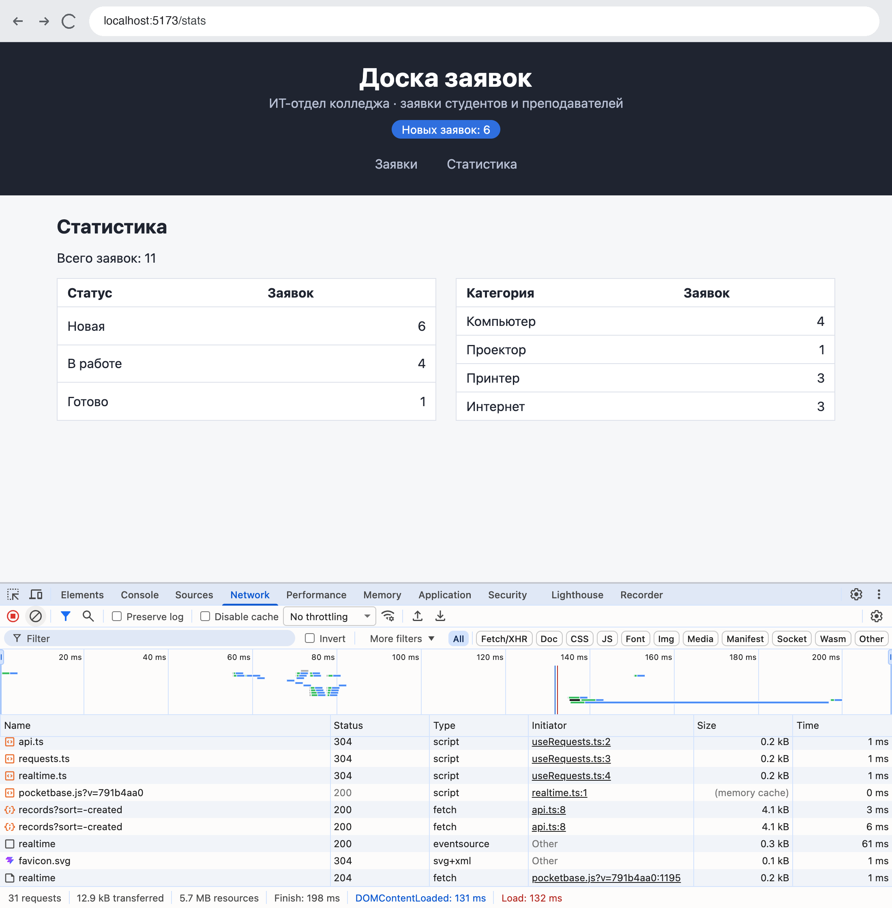
Переход по <a href>: 31 запрос
ДелаемМеню на NavLink
- Замените ссылки на NavLink
Замените содержимое
src/components/Header.tsx. Теги<a href>заменены компонентомNavLinkиз react-router.zayavki/src/components/Header.tsx import { NavLink } from 'react-router' type HeaderProps = { newCount: number } function Header({ newCount }: HeaderProps) { return ( <header className="header"> <h1>Доска заявок</h1> <p>ИТ-отдел колледжа · заявки студентов и преподавателей</p> <span className="header__count">Новых заявок: {newCount}</span> <nav className="nav"> <NavLink to="/">Заявки</NavLink> <NavLink to="/stats">Статистика</NavLink> </nav> </header> ) } export default Header
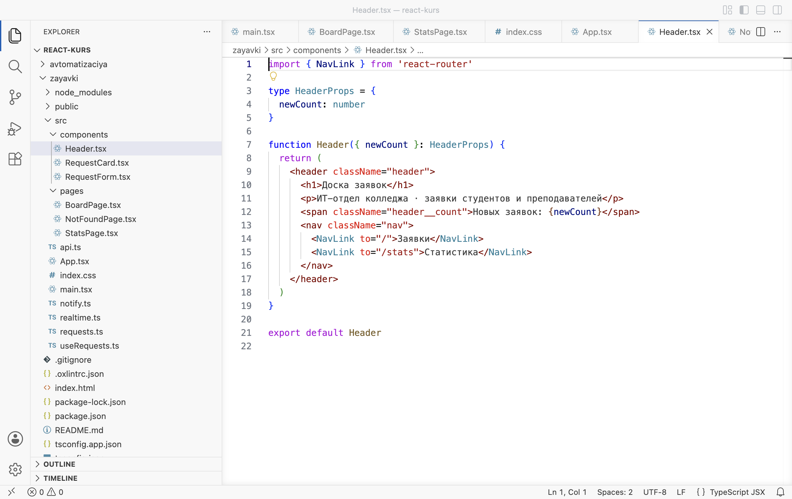
Меню на NavLink - Повторите переход
Обновите страницу
localhost:5173(F5), очистите список Network кнопкой ⊘ и нажмите Статистика. Адрес сменился на/stats, в Network одна строка — значок вкладкиfavicon.svg. Заявки заново не загружались. Пункт меню «Статистика» выделен белым.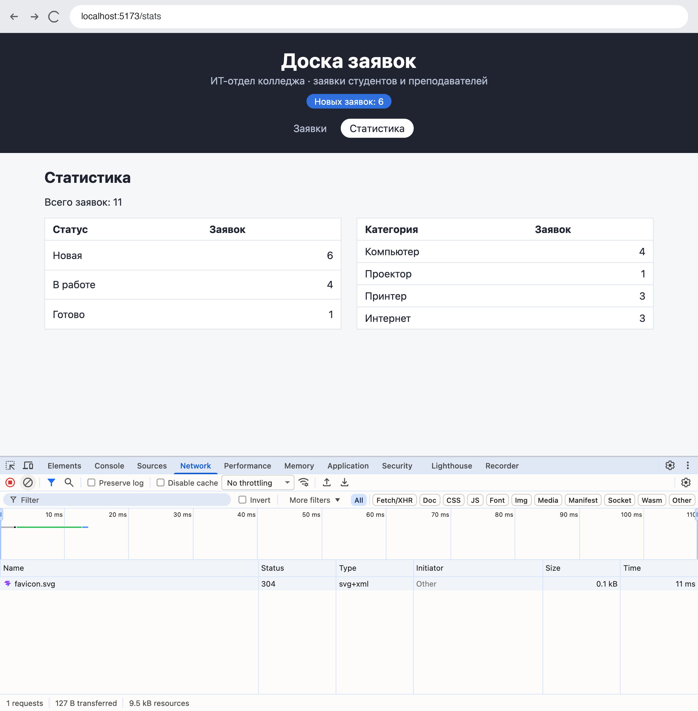
Переход по NavLink: запросов к серверу нет - Выберите фильтр
Закройте DevTools. Нажмите пункт меню Заявки, затем фильтр Новая. В списке только новые заявки.
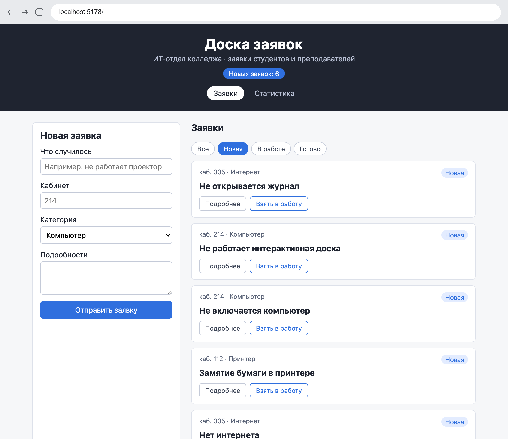
Фильтр «Новая» на доске - Уйдите и вернитесь
Нажмите Статистика, затем Заявки. Фильтр снова «Все».
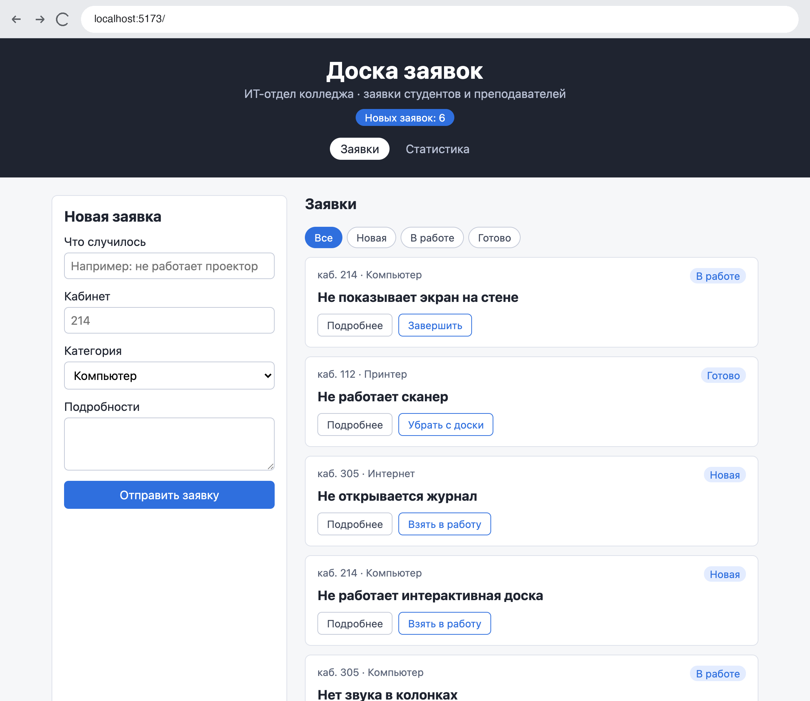
После возврата фильтр сброшен на «Все»
РазбираемсяЧем NavLink отличается от <a>
Обычная ссылка <a href="/stats"> — команда браузеру открыть новую страницу. Браузер выгружает текущую страницу целиком и запрашивает адрес у сервера заново. Vite отдаёт тот же index.html, и приложение запускается с нуля: все модули загружаются снова, useRequests заново загружает список и подписывается на события. Всё состояние — список, сообщение, фильтр — теряется. Отсюда 31 запрос в опыте.
Чтобы сменить канал, телевизор не выключают из розетки: нажимают кнопку на пульте, и меняется только картинка. Обычная ссылка в одностраничном приложении похожа на выключение из розетки: после включения телевизор заново загружается и ищет каналы.
Link — компонент react-router для ссылки внутри приложения. Он отрисовывает тот же тег <a>, но перехватывает нажатие. Вместо загрузки новой страницы Link меняет адрес в строке браузера средствами History API (функция history.pushState) и сообщает BrowserRouter новый путь. Routes отрисовывает другой маршрут, а App, хук useRequests и список заявок остаются в памяти. Атрибут to — путь, куда ведёт ссылка, вместо href.
NavLink — тот же Link для меню. Если его путь совпадает с текущим, NavLink добавляет тегу класс active. Правило .nav a.active из index.css выделяет такой пункт белым фоном. Для пути / совпадение только точное, поэтому на странице /stats пункт «Заявки» не выделен.
Переход на /stats по <a href> и по NavLink
В обоих случаях в адресной строке /stats и на экране статистика. Различаются шаги между нажатием и появлением страницы.
Кнопки браузера «Назад» и «Вперёд» тоже работают без перезагрузки: pushState записывает каждый переход в историю вкладки, и BrowserRouter отслеживает переходы по ней.
Фильтр сбросился по другой причине. При переходе на /stats маршрут / перестаёт подходить, и Routes убирает BoardPage с экрана. Компонент удаляется вместе со своим состоянием filter, а эффект Esc выполняет очистку из главы 2.1 и снимает подписку на клавиатуру. При возврате на / создаётся новый BoardPage, и useState снова начинает с 'Все'. Состояние, которое должно пережить смену страниц, хранят выше Routes — в App. Так хранится список заявок, поэтому он не загружается заново.
Меню ведёт на две постоянные страницы. Страниц заявок столько, сколько заявок в базе, и для них нужен один маршрут с изменяемой частью пути.
§4Адрес с параметром: страница заявки
ДелаемСсылка с карточки и страница заявки
- Сделайте заголовок карточки ссылкой
Замените содержимое
src/components/RequestCard.tsx. Карточка получает номер заявки в propid, а заголовок становится ссылкой на страницу заявки.zayavki/src/components/RequestCard.tsx import { useState } from 'react' import { Link } from 'react-router' import type { Category, Status } from '../requests' type RequestCardProps = { id: string title: string room: string category: Category details: string status: Status onNext: () => void onRemove: () => void } function RequestCard({ id, title, room, category, details, status, onNext, onRemove }: RequestCardProps) { const [open, setOpen] = useState(false) return ( <article className="card"> <div className="card__top"> <span className="card__room">каб. {room} · {category}</span> <span className="card__status">{status}</span> </div> <h3> <Link to={`/requests/${id}`}>{title}</Link> </h3> {open && <p>{details}</p>} <div className="card__actions"> <button className="card__more" onClick={() => setOpen(!open)}> {open ? 'Скрыть' : 'Подробнее'} </button> {status === 'Готово' ? ( <button onClick={onRemove}>Убрать с доски</button> ) : ( <button onClick={onNext}>{status === 'Новая' ? 'Взять в работу' : 'Завершить'}</button> )} </div> </article> ) } export default RequestCard
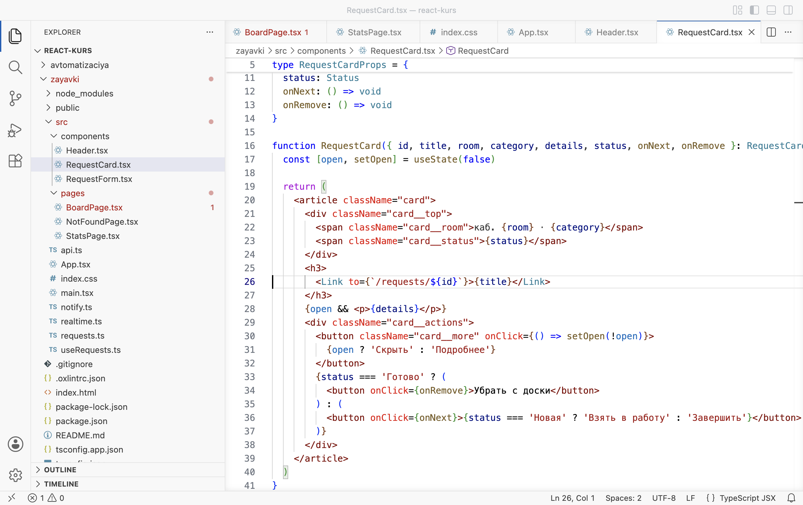
Заголовок карточки — ссылка Link В проводнике у
BoardPage.tsxпоявилась красная метка: карточке теперь нуженid, а страница его ещё не передаёт. - Передайте id в карточку
Откройте
src/pages/BoardPage.tsx. После строки 57key={r.id}добавьте строку:BoardPage.tsx · строка 58 id={r.id}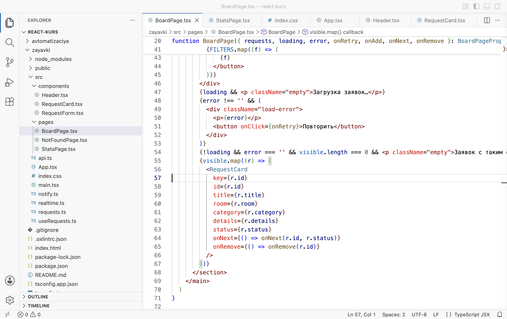
BoardPage передаёт карточке id - Создайте страницу заявки
В папке
src/pagesсоздайте файлRequestPage.tsx.zayavki/src/pages/RequestPage.tsx import { Link, useNavigate, useParams } from 'react-router' import type { RequestItem, Status } from '../requests' type RequestPageProps = { requests: RequestItem[] loading: boolean onNext: (id: string, status: Status) => void onRemove: (id: string) => void } function RequestPage({ requests, loading, onNext, onRemove }: RequestPageProps) { const { id } = useParams() const navigate = useNavigate() if (loading) { return ( <main className="page"> <p className="empty">Загрузка заявки…</p> </main> ) } const request = requests.find((r) => r.id === id) if (request === undefined) { return ( <main className="page"> <Link to="/" className="back">← Все заявки</Link> <p className="empty">Заявки с номером {id} нет: её удалили или в адресе ошибка.</p> </main> ) } function handleRemove(requestId: string) { onRemove(requestId) navigate('/') } return ( <main className="page"> <Link to="/" className="back">← Все заявки</Link> <article className="card request"> <div className="card__top"> <span className="card__room">каб. {request.room} · {request.category}</span> <span className="card__status">{request.status}</span> </div> <h2>{request.title}</h2> <p>{request.details === '' ? 'Подробностей нет.' : request.details}</p> <p className="request__id">Номер заявки: {request.id}</p> <div className="card__actions"> {request.status === 'Готово' ? ( <button onClick={() => handleRemove(request.id)}>Убрать с доски</button> ) : ( <button onClick={() => onNext(request.id, request.status)}> {request.status === 'Новая' ? 'Взять в работу' : 'Завершить'} </button> )} </div> </article> </main> ) } export default RequestPage
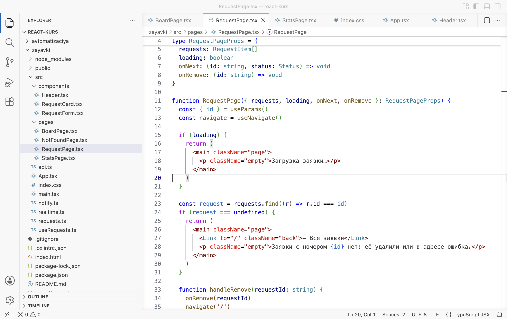
RequestPage.tsx - Добавьте маршрут заявки
В
src/App.tsxпосле строки 5 добавьте импорт:App.tsx · строка 6 import RequestPage from './pages/RequestPage'
Между маршрутами
/statsи*(после строки 80) добавьте маршрут заявки:App.tsx · строки 81–84 <Route path="/requests/:id" element={<RequestPage requests={requests} loading={loading} onNext={handleNext} onRemove={handleRemove} />} />
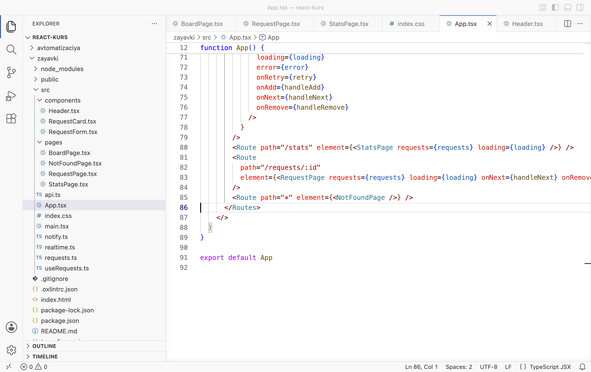
Маршрут /requests/:id в App.tsx - Откройте заявку
Обновите доску (F5) и нажмите на заголовок верхней заявки «Не показывает экран на стене». Адрес сменился на
/requests/…с номером заявки из PocketBase, на странице — описание и кнопка «Завершить». Номер в адресе у вас будет другим: его выдаёт база.Страница заявки по адресу /requests/… - Обновите страницу заявки
Нажмите F5. На мгновение появляется «Загрузка заявки…», затем та же страница, что на кадре выше.
- Откройте номер, которого нет
Наберите адрес
localhost:5173/requests/abc.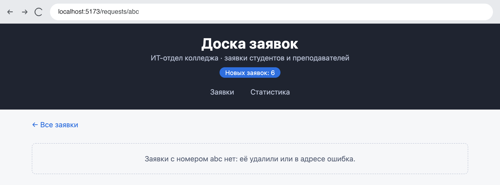
Заявки с таким номером нет - Завершите заявку
Нажмите в браузере кнопку «Назад», чтобы вернуться на страницу заявки, и нажмите Завершить. Статус сменился на «Готово», кнопка — на «Убрать с доски».
Заявка завершена со своей страницы - Уберите заявку
Нажмите Убрать с доски. Открылась доска по адресу
/, заявки «Не показывает экран на стене» в списке нет.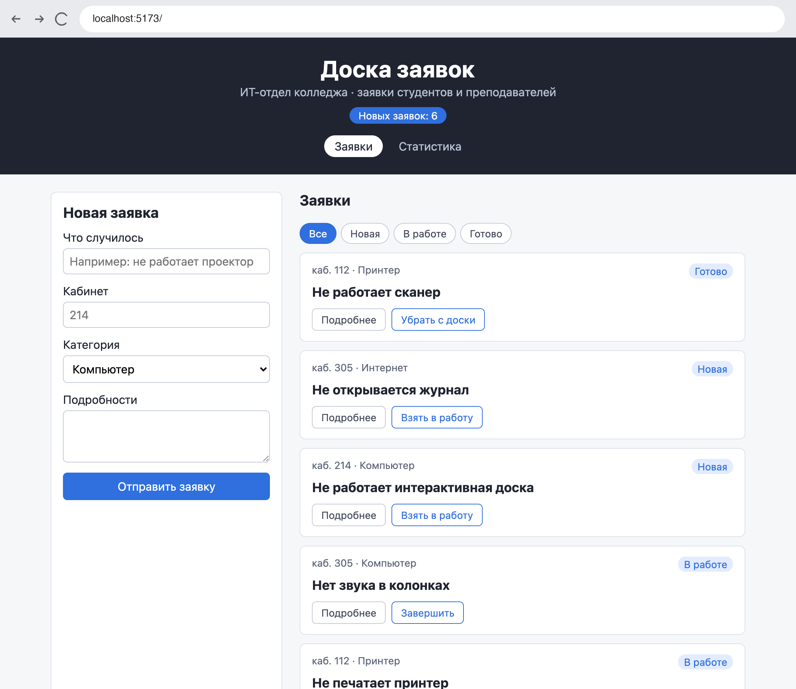
После удаления — переход на доску
РазбираемсяПараметр пути и переход из кода
В пути маршрута /requests/:id часть с двоеточием — параметр пути. Маршрут подходит к любому пути вида /requests/что-угодно, а то, что стоит на месте :id, react-router запоминает под именем id. Один маршрут обслуживает все заявки, как один бланк с пустой графой «номер кабинета» подходит для любого кабинета.
Ссылка в карточке собирает путь шаблонной строкой: `/requests/${id}`. Для заявки с номером sb54xjym6egnk8y получается /requests/sb54xjym6egnk8y, и на странице этот номер достаётся обратно.
function RequestPage({ requests, loading, onNext, onRemove }: RequestPageProps) { const { id } = useParams() 1 const navigate = useNavigate() 2 if (loading) { 3 return ( <main className="page"> <p className="empty">Загрузка заявки…</p> </main> ) } const request = requests.find((r) => r.id === id) 4 if (request === undefined) { 5 return ( <main className="page"> <Link to="/" className="back">← Все заявки</Link> <p className="empty">Заявки с номером {id} нет: её удалили или в адресе ошибка.</p> </main> ) } function handleRemove(requestId: string) { onRemove(requestId) navigate('/') 6 }
- 1
useParams— хук react-router, который возвращает параметры пути текущего маршрута. Для адреса/requests/sb54xjym6egnk8yон вернёт{ id: 'sb54xjym6egnk8y' }, и распаковка кладёт номер в переменнуюid. Типid—string | undefined: в типе хука не записано, к какому маршруту относится компонент, поэтому TypeScript допускает отсутствие параметра. - 2
useNavigateвозвращает функциюnavigate— переход по пути из кода, без нажатия на ссылку. Оба хука стоят до первогоreturn: правило из главы 2.4. - 3
Пока список загружается, заявки в нём нет. Без этой проверки после F5 на мгновение показалось бы сообщение «Заявки нет».
- 4
findищет в массиве первый элемент, для которого функция вернулаtrue, и возвращает его. Если такого нет —undefined. Номер из адреса сравнивается сidкаждой заявки. - 5
Заявки нет: номер в адресе с ошибкой или заявку удалили. Страница показывает сообщение и ссылку на доску.
- 6
После удаления заявки её страница больше не нужна, и
navigate('/')переводит на доску.onRemoveотправляет запрос, а переход выполняется сразу, не дожидаясь ответа. Если сервер вернёт ошибку, её текст появится в сообщении под шапкой:noticeвыводитAppна всех страницах.
Страница заявки открывается и по прямому адресу, и после F5, потому что каждый шаг повторяется с нуля: Vite отдаёт index.html, BrowserRouter читает путь, Routes выбирает маршрут /requests/:id, а useRequests в App загружает список. Пока он загружается, RequestPage показывает «Загрузка заявки…».
function RequestPage({ requests, loading, onNext, onRemove }: RequestPageProps) { const { id } = useParams() const navigate = useNavigate() if (loading) { return ( <main className="page"> <p className="empty">Загрузка заявки…</p> </main> ) } const request = requests.find((r) => r.id === id) if (request === undefined) { return ( <main className="page"> <Link to="/" className="back">← Все заявки</Link> <p className="empty">Заявки с номером {id} нет: её удалили или в адресе ошибка.</p> </main> ) }
- Параметр из адреса
Routesвыбрал маршрут/requests/:id.useParamsвозвращает часть пути на месте:id.id'sb54xjym6egnk8y' - Первая отрисовка: загрузка
Список ещё не пришёл,
loadingравенtrue. Компонент возвращает надпись «Загрузка заявки…».loadingtruerequests[ ] - Список пришёл
Appполучил 11 заявок и отрисовался заново,RequestPage— вместе с ним.findпроверяет заявки по очереди и находит ту, у которойidсовпал.loadingfalserequest«Не показывает экран…» - Заявка найдена
request— неundefined, блок с сообщением пропущен. Дальше выполняется основнойreturnс карточкой заявки.
У каждой страницы теперь свой файл. Все данные для них по-прежнему хранятся в App.
§5Как данные доходят до страниц
РазбираемсяProps от App к страницам
В главе 2.4 из опыта с шапкой получилось правило: хук вызывают один раз в общем родителе, а данные передают через props. По этому правилу useRequests вызывается в App, и каждая страница получает свою часть данных в element своего маршрута.
Что App передаёт шапке и страницам
Через App проходит 14 props. Одни и те же requests и loading передаются трём страницам, onNext и onRemove — двум.
Такая передача работает и проверяется TypeScript: если забыть prop, сборка покажет ошибку, как с id карточки в §4. Но каждая новая страница, которой нужен список, добавляет в App ещё один тег со списком props. Если страница вложена глубже — например, таблица статистики станет отдельным компонентом, — props придётся передавать через промежуточный компонент, которому они не нужны.
Глава 3.2 даёт страницам доступ к общим данным без передачи через App — через контекст React.
§6Частые ошибки
Сообщения получены в проекте zayavki: ошибки типов — командой npx tsc -b, сборки — командой npm run build, остальные — в консоли браузера.
| Что видно | Почему | Что сделать |
|---|---|---|
error TS2307: Cannot find module 'react-router' or its corresponding type declarations. или Rolldown failed to resolve import "react-router" from "src/main.tsx" | Библиотека не установлена в этом проекте | В папке zayavki выполнить npm install react-router@8.5.1 |
Пустая страница, в консоли useLocation() may be used only in the context of a <Router> component. | В main.tsx нет <BrowserRouter>, а NavLink или Routes его ищут | Обернуть <App /> в <BrowserRouter> |
Под шапкой пусто, в консоли No routes matched location "/abc" | Ни один маршрут не подошёл к пути | Проверить написание пути в Route и в ссылке; добавить маршрут path="*" |
error TS2741: Property 'id' is missing in type '{ key: string; title: string; … }' but required in type 'RequestCardProps'. | Карточке нужен prop id, а BoardPage его не передаёт | Добавить id={r.id} в <RequestCard> |
| При переходе по меню мигает «Загрузка заявок…», в Network десятки запросов | В меню обычные <a href>: страница загружается заново | Заменить на NavLink или Link с атрибутом to |
| Фильтр или поле формы сбрасывается после перехода на другую страницу | Состояние хранится в странице, которую Routes убирает с экрана | Если состояние нужно сохранить — перенести его в App, выше Routes |
§7Проверьте себя
Почему до главы адрес /stats открывал доску?
Vite на любой путь отдаёт index.html, а App путь не читал и всегда рисовал доску.
За что отвечают BrowserRouter, Routes и Route?
BrowserRouter читает путь из адресной строки и следит за его изменением. Routes выбирает подходящий маршрут и отрисовывает его компонент на своём месте. Route описывает один маршрут: путь и элемент.
Почему шапка видна на всех страницах?
<Header> стоит в App вне <Routes>. Внутри Routes меняется только страница.
Почему после перехода по NavLink заявки не загружаются заново, а после <a href> загружаются?
NavLink меняет адрес через pushState, приложение остаётся в памяти вместе со списком. <a href> перезагружает страницу, приложение запускается с нуля, и useRequests загружает список снова.
Почему фильтр сбрасывается после возврата на доску?
Фильтр — состояние BoardPage. При уходе со страницы компонент удаляется вместе с состоянием, при возврате создаётся новый со значением 'Все'.
Что вернёт useParams() на странице /requests/k2m9 для маршрута /requests/:id?
Объект { id: 'k2m9' }.
Нужно добавить страницу «О доске» по адресу /about с пунктом меню. Что изменится в коде?
Новый файл src/pages/AboutPage.tsx; в App.tsx импорт и маршрут <Route path="/about" element={<AboutPage />} /> перед маршрутом *; в Header.tsx строка <NavLink to="/about">О доске</NavLink>.
Шпаргалка
npm install react-router@8.5.1<BrowserRouter><App /></BrowserRouter> в main.tsx<Route path="/stats" element={<StatsPage />} /> внутри <Routes>path="*"<Link to="/">, в меню — <NavLink> с классом activepath="/requests/:id" → const { id } = useParams()const navigate = useNavigate() → navigate('/')const { pathname } = useLocation()Итог главы
Маршрутизация — выбор компонента по пути из адресной строки. Сервер Vite на любой путь отдаёт один index.html, а путь читает react-router в браузере: BrowserRouter в main.tsx следит за адресом, Routes выбирает из списка Route подходящий маршрут, маршрут * ловит все остальные пути. Доска разделена на страницы в папке src/pages: BoardPage, StatsPage, RequestPage и NotFoundPage; шапка с меню стоит вне Routes и видна везде. Ссылки Link и NavLink меняют адрес без перезагрузки, поэтому список заявок в App не загружается заново, а состояние самой страницы при уходе с неё удаляется. Маршрут /requests/:id с параметром обслуживает все заявки: номер достаёт useParams, переход из кода выполняет navigate. Данные страницы получают от App через props, и через App проходит 14 props.
Источники
- React Router — Declarative Mode: Installation
- React Router — Declarative Mode: Routing
- React Router — Declarative Mode: Navigating
- React Router — Declarative Mode: URL Values
- MDN — History: метод pushState()
- Vite — Shared Options: appType